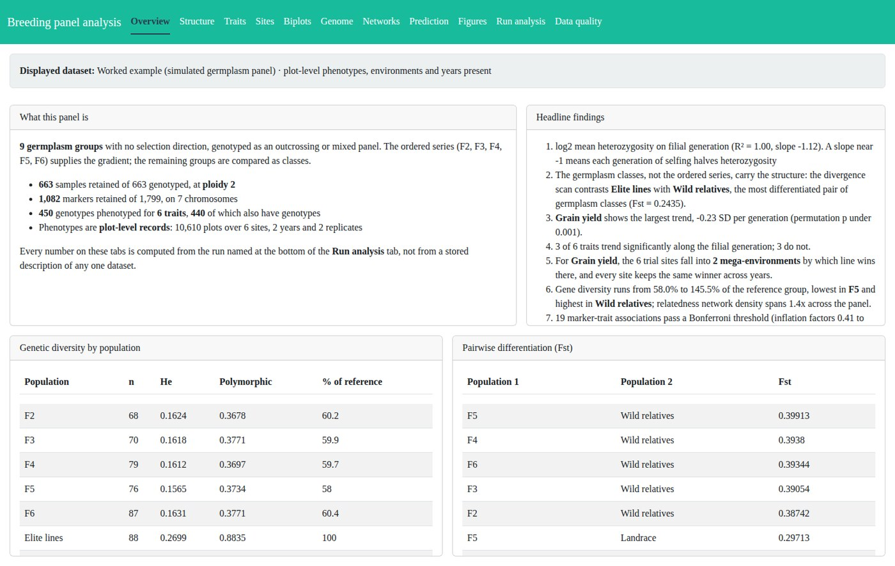
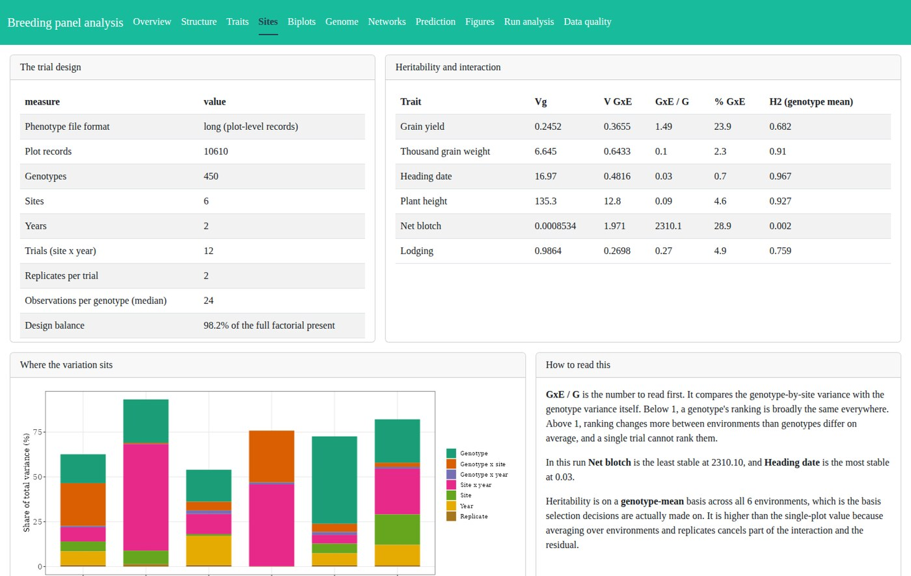
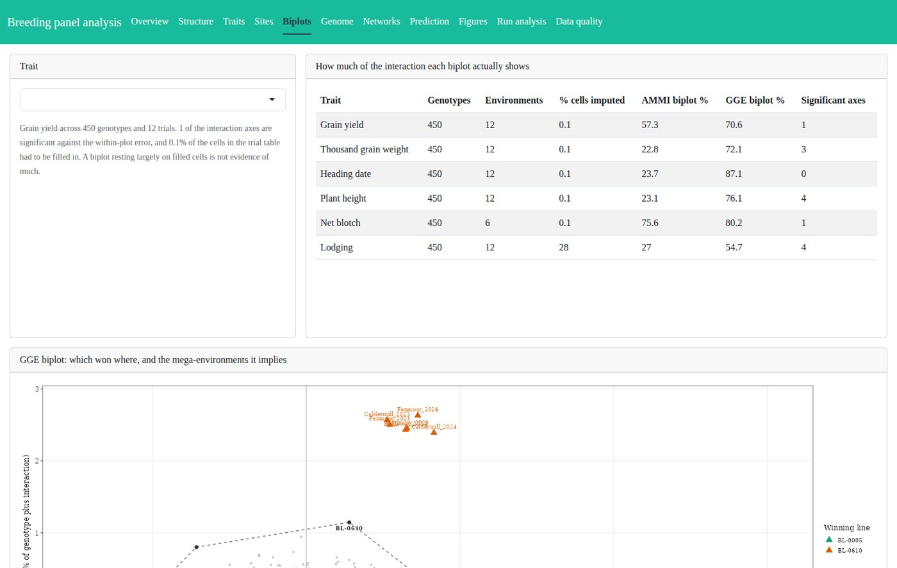
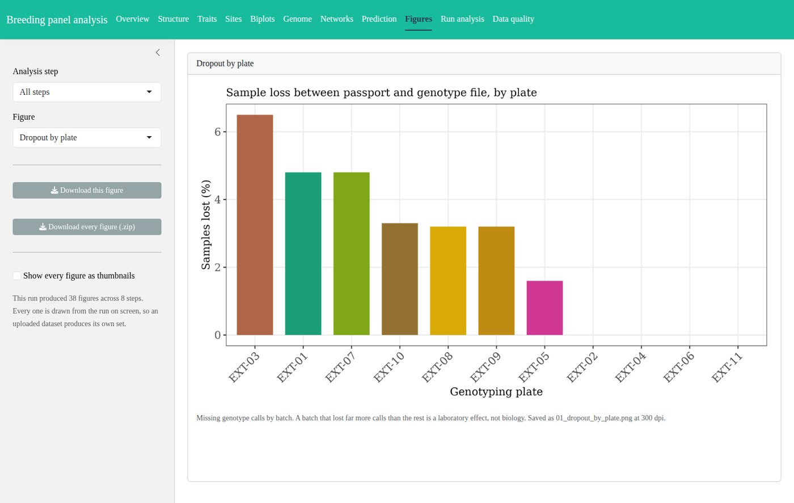

An open Shiny tool that takes a germplasm or breeding panel from VCF and passport files to population structure, multi-environment trials, AMMI and GGE biplots, genome scans and genomic prediction.
Most breeding panels arrive as three files: genotypes, a passport table and a sheet of trial records. Getting from those to a decision, which lines to advance and which sites to keep testing at, means population structure, multi-environment trial analysis, biplots, a genome scan and a prediction check, each usually done in a different script by a different person.
This is that whole path in one application, running on a simulated barley germplasm panel you can replace with your own data.



The pipeline reads which kind of panel it has been given from the class labels in the passport, and changes the analysis accordingly.
| Divergent selection | Germplasm panel | |
|---|---|---|
| Recognised when | the labels carry both an upward and a downward direction | they do not |
| Gradient | signed selection index | position in the ordered filial series |
| Contrasts | high against low, and each cycle against the base | each class against a reference, and the two ends of the series |
| A trend means | correlated response to selection | inbreeding depression, where dominance exists |
Groups with no position on an ordered axis, elite lines, landraces, wild relatives, are compared as classes rather than given an invented place on a line.
Three files: a passport table, a VCF, and phenotypes as plot records or as one fitted value per genotype. Twenty-two input checks run first, each reporting pass, warning or error with a sentence naming the fix, and the run button stays disabled until nothing is failing. Ploidy, the number of sites, years and replicates, and the trait list are all read from the data rather than assumed.
The application can also generate a complete template dataset from a function with every one of those parameters exposed, so you can see how the analysis behaves on a design close to yours before committing your own files.

A simulator with a recorded truth generates the template panel, and 35 checks score the pipeline's estimates against what the simulation actually did: that heterozygosity halves with each generation of selfing, that BLUPs recover the true genetic values, that inbreeding depression appears only where dominance was simulated, that differentiation is elevated at the domestication genes and not at the polygenic background, that AMMI concentrates a simulated crossover on one axis and gives no dominant axis to unstructured interaction, and that both mega-environment methods recover the simulated split.
That is a question real data cannot answer, which is the point of simulating it. Every check currently passes.